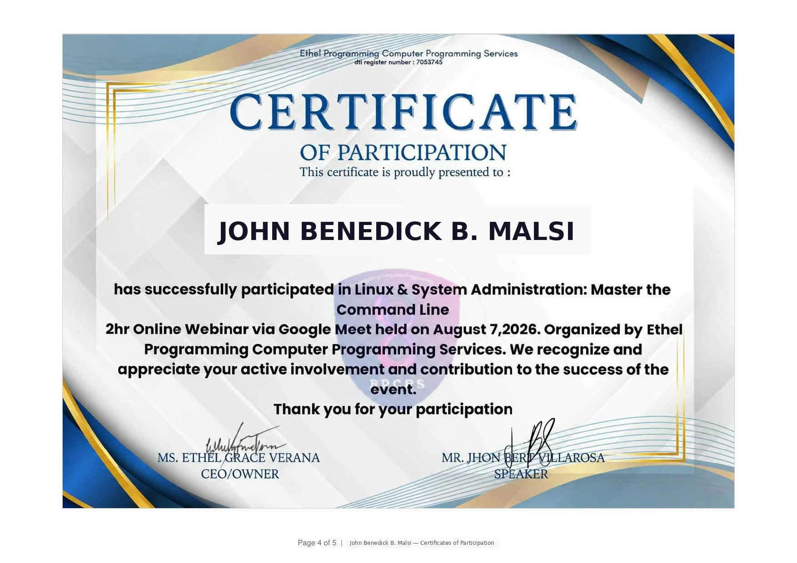
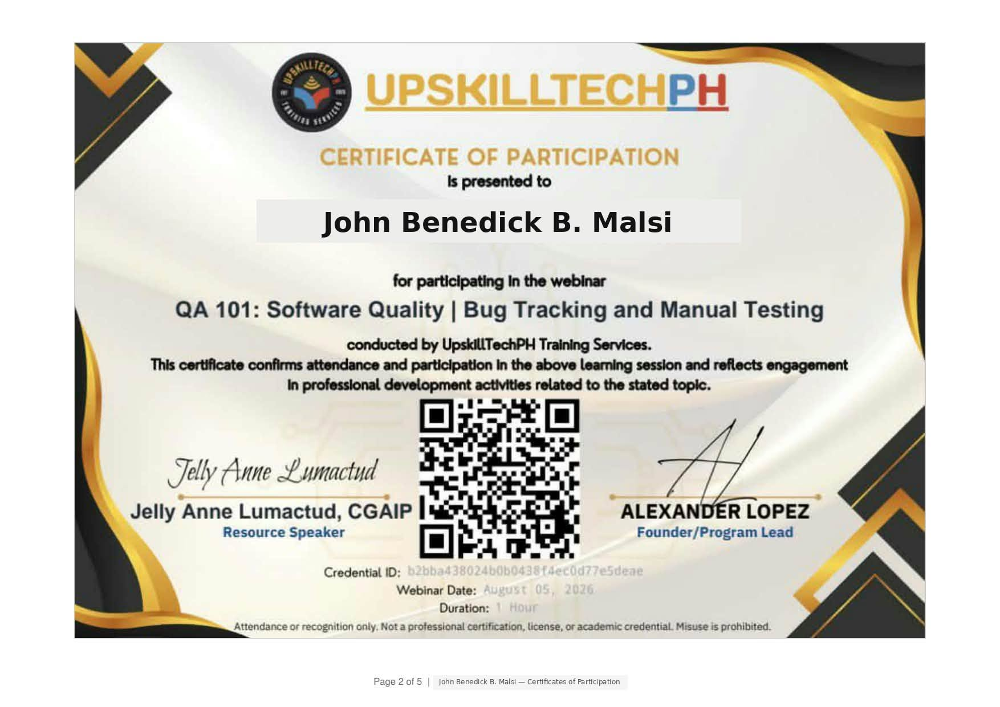
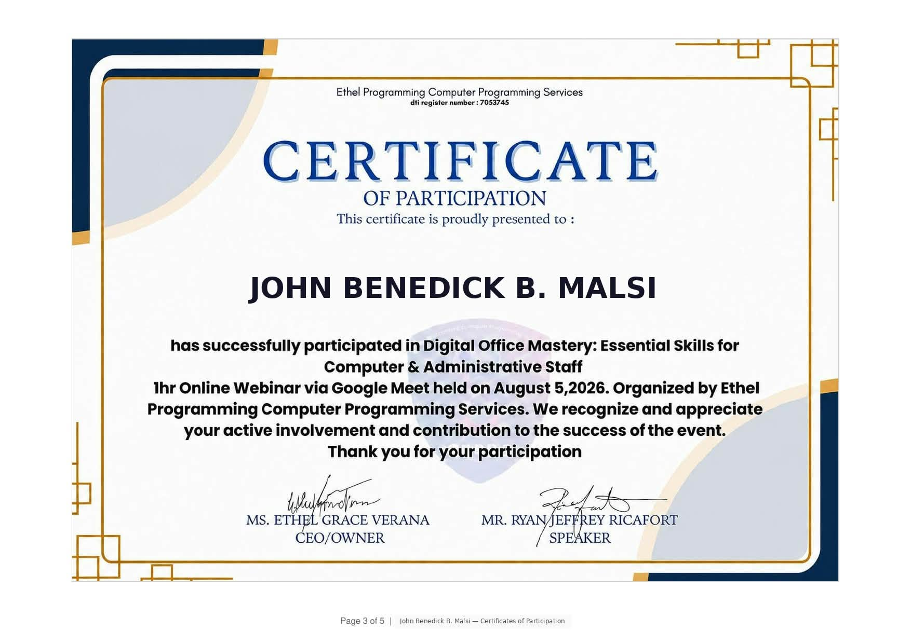

Certification
IT Support Professional & Web Developer specializing in technical troubleshooting, helpdesk support, and building dynamic web solutions. Ready to deliver reliable digital systems and technical operations.
I am a dedicated Bachelor of Science in Information Technology (BSIT) graduate from Datamex College of Saint Adeline with technical competencies in IT support, web development, hardware/software troubleshooting, and network maintenance. Throughout my academic program, I have focused on bridging theoretical concepts with practical deployment, building responsive web applications, and providing end-user technical support.
My professional values emphasize clean code architecture, efficient system troubleshooting, user-centric interface design, and reliable technical service. I am eager to contribute my technical acumen to an innovative team as an IT Support Specialist or Web Developer.
Verified competencies acquired throughout the BSIT program
Selected courses and credentials supporting my technical foundation.



Demonstrating practical application development, databases, and data analysis

Laboratory equipment and facility usage analytics project utilizing tracking scripts, usage log processing, and automated reporting dashboards to optimize lab asset deployment, scheduling efficiency, and operational readiness.

Custom web development project for Pascor, designed to provide a responsive and user-friendly online experience.
Documented troubleshooting logs and defensive security practices
ipconfig /release and ipconfig /renew, and verified WLAN AutoConfig.ipconfig /flushdns.Professional growth strategy and AI Usage Log
Target Position: Junior Web Developer / IT Support Specialist
6-Month Goal: Secure full-time employment in an IT enterprise and complete CompTIA Security+ certification.
1-Year Goal: Master advanced cloud deployment pipelines (AWS/Azure) and lead minor application modules.
3-Year Goal: Transition into a Full-Stack Software Engineer / Solutions Architect role.
| Task | AI Assistance | Verification |
|---|---|---|
| SQL Query Optimization | Suggested indexing strategy | Tested execution time in MySQL Workbench |
| CSS Grid Layout | Drafted responsive card template | Verified mobile breakpoint rendering |
I am actively looking for entry-level opportunities in Information Technology. Reach out for collaboration or hiring inquiries!
"Entering the BSIT program at Datamex, my knowledge of IT was limited to basic computer navigation. Through rigorous training in programming, database architecture, and cybersecurity, my problem-solving abilities have evolved profoundly. I am now fully equipped to build secure software, manage enterprise data, and deliver industry-ready solutions."